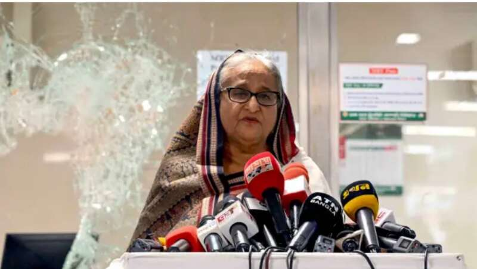
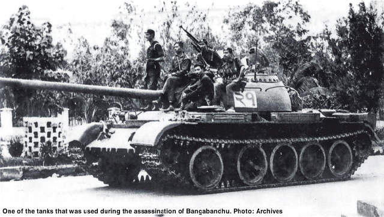
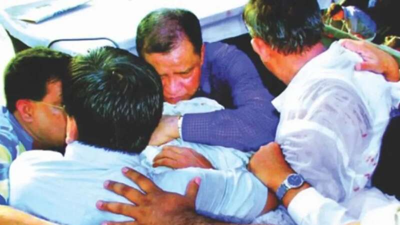

·1月8日，哈西娜在记者会上回答问题。
她从十余次暗杀中幸存，
却没能撑过这次危机。
8月5日，孟加拉国总理谢赫·哈西娜在宣布辞职后，登上了一架飞往印度的直升机。有媒体称，哈西娜辞职后仅有45分钟离开孟加拉国。
同日，数千名抗议者冲进孟加拉国总理谢赫·哈西娜的官邸。一名抗议者还爬上了哈西娜的父亲、孟加拉国首任总统拉赫曼的雕像上，高举拳头。不久后，这座雕像便被抗议者们拆除。
·抗议者登上孟加拉国国父拉赫曼的雕像。
据一名印度官员透露，哈西娜已于当天下午抵达印度德里的一座军用机场。她的下一个目的地可能是伦敦，并在那里与自己的子女汇合。
在孟加拉国执政20年后，多次“大难不死”的哈西娜，又一次离开了祖国。
一场“超出预计”的危机
在哈西娜辞职当天，在孟加拉国首都达卡街头，抗议者与警察爆发了大规模冲突，据当地媒体报道，有至少95人在冲突中死亡，包括15名警察。
中国现代国际关系研究院南亚研究所学者徐琴在接受环球人物采访时表示，自今年6月以来，孟加拉国因为民众反对公务员配额制度而爆发的政治危机愈演愈烈，超出了许多人的预计，“包括哈西娜本人”。
·在孟加拉国街头爆发冲突的警方与民众。
公务员配额制度一直是孟加拉国社会的敏感话题。1972年，孟加拉国独立后，为了补偿在独立战争中做出牺牲或遭遇迫害的人群，拉赫曼宣布在公务员制度中实行配额制：30%的职位被分配给参加独立战争的老兵（又称“自由战士”），10%的职位被分配给在战争中受到伤害的妇女，40%的职位分配给孟加拉国各省，20%的职位是择优录取。
多年来，该制度历经了多次调整。在1985年，择优录取职位的比例上升到了45%。1997年，随着许多参加过独立战争的老兵去世，孟政府决定将配额的适用范围扩大到老兵的子女。2012年，适用范围又进一步扩大到老兵的孙辈。
2008年，独立战争老兵阿克巴尔·阿里·汗与同事一同提交了一份反对配额制度的报告，强调该制度破坏了公务员录取制度的公信力。2013年，数百名未通过公务员考试的考生发起抗议。他们认为自己在考试中表现优异，却依然未能获得职位。
自1996年当选孟加拉国总理以来，哈西娜一直是配额制度的支持者。尽管如此，哈西娜也看到了民众对配额制的不满，并试图做出妥协。2018年，哈西娜政府发布通告，宣布废除部分职位的配额制，并承诺如果某职位招不到足够的配额人群，余下的空位将面向全社会择优录用。这一改革在2020年正式生效。
·孟加拉国公务员考试考场。
然而这一改革又激起了很多“自由战士”后裔的不满。由于人口众多，而经济发展所能提供的优质就业岗位十分有限，因此对许多人来讲，能否获得一个“铁饭碗”，是决定一家人温饱的大事。
2024年6月，孟加拉国高等法院在审理了“自由战士”后裔提交的申诉后，判决2018的通告违法，要求撤回2020年实施的配额制改革。这一决定迅速在孟加拉国掀起了反对声浪。
面对民众的抗议，哈西娜又在一次新闻发布会上发言不慎。她称：“如果‘自由战士’的孙辈得不到（配额）福利，那谁能得到？拉扎卡尔的孙辈？”
拉扎卡尔泛指那些在独立战争期间参加民兵组织，杀害“自由战士”的人，含义类似中文里的“叛徒”，在孟加拉国是一个极具侮辱性的词汇。在抗议者看来，哈西娜的这一发言无异于火上浇油，抗议规模迅速扩大。

·2024年7月，哈西娜在一个被抗议者破坏的地铁站前发表讲话。
尽管孟加拉国高等法院改弦更张，在7月宣布将对配额制进行改革，将择优录用的比率提升至93%，哈西娜也表示愿意和抗议者进行面对面的对话，但为时已晚。抗议活动愈演愈烈，支持政府和反对政府的民众在街头不断爆发冲突。
徐琴说，在孟加拉国，街头抗议是一个屡见不鲜的现象。哈西娜一开始也认为自己能够很好地控制住局势，也没有意识到自己对抗议者强硬表态的后果。随着冲突日益激化，哈西娜逐渐失去了对局势的控制，很多抗议者喊出了要求哈西娜下台的口号。在孟加拉国政坛扮演重要角色的军队也不再支持哈西娜领导的“人民阵线”政府，并与其撇清关系。这对哈西娜政府造成了严重打击。
面对巨大的国内压力，哈西娜最终选择辞职。当她带着几个随从，登上飞往印度的直升机时，她也许会想起43年前，她在民众的欢呼声中重返祖国的那个夜晚。
曾将杀父仇人送上绞架
在孟加拉国政坛，哈西娜一直有两张面孔。在支持者眼里，她是和蔼可亲的“姐姐”。在敌人眼里，她则是令人恐惧的“复仇女神”。
1947年，哈西娜出生在首都达卡附近的一个村落里。作为家中的长女，她一直是弟弟妹妹心目中善解人意的大姐姐。
·1966年，哈西娜（左一）与弟弟们合影。
青年时的哈西娜是一名“文学少女”。在英国殖民统治期间，孟加拉国的国语孟加拉语遭到了殖民者的打压。抱着发扬母语文化的夙愿，哈西娜在1967年考入孟加拉国名校达卡大学，攻读孟加拉语文学专业。同年，她与孟加拉国核物理学家瓦吉德成婚。
1972年，孟加拉国独立。独立运动的领导者、哈西娜父亲拉赫曼担任首任总统。
父亲多年来一直为孟加拉国独立而奔走，哈西娜自小耳濡目染，深受影响。她曾在接受采访时说：“在我儿时的记忆中，父亲时常被关进监狱，再被释放，这都源于他不断地抗争，而我们这个国家也因此走向独立。”
1973年，哈西娜从达卡大学毕业。她回忆，由于丈夫常年在国外工作，她婚后经常和娘家人住在一起。“我的爸爸、妈妈、弟弟、弟媳，一大家子人都住在一栋房子里。”
·青年时的哈西娜与父亲拉赫曼合影。
1975年7月30日，哈西娜决定前往联邦德国与丈夫生活，并带上妹妹一起去“见世面”。临行前，她的家人都前往机场为她和妹妹送行。没想到，这次告别竟是她和家人最后一次见面。
半个月后，孟加拉国爆发政变。政变军人驾驶坦克攻入总统官邸。几小时内，哈西娜家十余位亲人遇害，其中包括她的父母、三个弟弟和两个弟媳。
当时在联邦德国的哈西娜和妹妹成了家中的幸存者。后来，哈西娜回忆改变她人生的那一天：“那天早上，我听到了电话铃响起，至今都忘不了那可怕的铃声……我的小弟弟那时还不到10岁。”
哈西娜说，时任孟加拉国驻联邦德国大使告诉她和丈夫国内发生政变的消息。她很快就意识到家人凶多吉少。尽管悲痛万分，她还是没有把这个消息告诉妹妹：“她太小了，比我小10岁。我不能立刻告诉她到底发生了什么。”
多年后，当谈到家人遇害的悲剧时，一向坚强的哈西娜忍不住哽咽：“这些（杀害我家人的）人也是孟加拉人，我的父亲那么爱着他们，他们怎么能下手杀害他。”

·1975年，叛军用来攻打总统官邸的坦克。
在得知噩耗后，她不顾危险，第一时间决定回国，但军政府拒绝她入境。她不得不在印度流亡。那段日子，她无比痛苦：“我失去了几乎所有家人，我寻求正义的努力也被阻挠。我不知道为什么，我真的竭尽全力了。”
1980年，孟加拉国政治局势出现变化，多名“人民联盟”成员来到印度拜访哈西娜，请求她回到祖国。1981年5月17日，已是人民联盟主席的她重返孟加拉国，获得民众的热烈欢迎。她特意将自己的办公室安排在父亲当年遇害的房间，以表达自己为家人和整个孟加拉国恢复正义的决心。
·1981年，刚刚回国的哈西娜向欢迎自己的民众致意。
回国后，哈西娜选择与父亲前政敌的遗孀卡莉达·齐亚合作。在哈西娜与各方的共同努力下，孟加拉国于1991年恢复议会选举制度。
1996年，哈西娜首次当选孟加拉国总理，任期至2001年。2009年，她再次当选总理，并连任至今。
当选总理后，哈西娜开始追究当年政变领导人的责任。1998年，孟加拉国高等法院判处12名政变领导人死刑。2010年，5名直接参与杀害拉赫曼的政变军人被施以绞刑。为了完成这次“复仇”，哈西娜足足用了35年。
“幸存者”再次出走
哈西娜经常自诩为一名“幸存者”，因为自从政以来，她曾遭遇十余次暗杀，多次死里逃生。
哈西娜离死亡最近的一次经历发生在2004年8月21日。那天正在讲台上发表演讲的哈西娜遭遇刺客突袭。事先占据周围制高点的刺客向哈西娜的讲台投掷了13枚手榴弹，她的私人保镖和两名“人民联盟”领导人当场死亡，她自己也被炸伤。她的支持者们见状，立刻组成“人盾”将她保护了起来。

·2004年8月21日，哈西娜的支持者组成“人盾”，将受伤的哈西娜团团围住。
暗杀发生后，孟加拉国安全部门立刻展开调查，先后逮捕了49名参与此次暗杀的人员，其中19人被判处死刑。
现在，从多次暗杀中幸存的哈西娜，没能撑过这次政治危机，再次离开了祖国。没有哈西娜的孟加拉国，会往何处去？
徐琴表示，此次孟加拉国爆发危机的直接原因是公务员配额制度，但其根本原因在于孟加拉国的经济困境。近年来，虽然从宏观上看，孟加拉国的经济增长相对亮眼，基础设施建设也取得了一些成就。但是其经济增长并没能有效惠及多数民众。最近几个月里，孟加拉国通货膨胀和失业问题日趋严重，导致民众生活水平出现下降。这都严重破坏了哈西娜政府的公信力。
哈西娜辞职后，孟加拉国军方称将协助组建临时政府管理国家。孟陆军总参谋长韦克·乌兹·扎曼称有必要宣布紧急状态或进行军事管理，但呼吁人们冷静下来回到家中，等待临时政府组建谈判的结果。孟加拉国总统罕默德·谢哈布丁·楚普也下令释放孟加拉国前总理，哈西娜的主要政敌卡莉达·齐亚。
·聚集在达卡街头的抗议者，旁边是被涂鸦的哈西娜画像。
徐琴认为，尽快哈西娜已经退场，但孟加拉国距离政治和解依然有一段路要走。一方面，哈西娜领导的“人民联盟”依然在孟加拉国内有影响力，如果新政府将其排除在外，很可能会造成新的矛盾。另一方面，孟加拉国的抗议者和军方之间也存在分歧。在这种情况下，如何组建一个能够让各方都满意的过渡政府，并重新举行大选，将是摆在孟加拉人面前的重要问题。